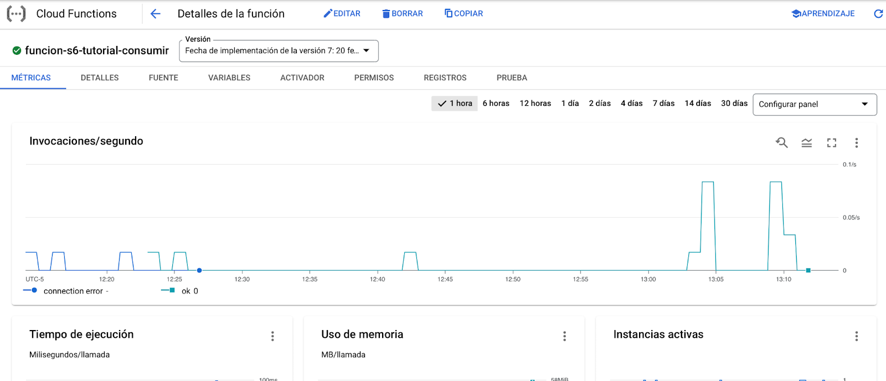

Objetivos
Al finalizar el tutorial el estudiante estará en capacidad de:
- Orquestar un conjunto de microservicios de manera asíncrona empleando colas de mensajería.
- Crear y configurar el servicio de Cloud Task para orquestar llamados de Cloud Function y Kubernetes
- Desplegar una aplicación basada en contenedores mediante Kubernetes.
Requisitos para desarrollar el tutorial
En particular se utilizarán los siguientes recursos:
- Contar con una cuenta activa en Google Cloud y con recursos para la creación de servicios. Además, contar con un proyecto creado en el que deberá crear la función. En caso de no tenerlo, a continuación se encuentra el manual para crearlos y/o administrarlos: Crea y administra proyectos | Documentación de Resource Manager | Google Cloud
- Instalación y configuración para desarrollo en Python. En caso de no tenerlo instalado o correctamente configurado, a continuación se muestra el manual de instalación y configuración: Configura un entorno de desarrollo de Python | Google Cloud
- Contar con un editor o IDE para manipular de manera correcta el código. Se recomienda trabajar con Visual Studio Code, pero puede usar el editor de su preferencia. A continuación se muestran los pasos de instalación de Visual Studio Code: Visual Studio Code - Code Editing. Redefined
- Contar con gcloud SDK para acceder a los servicios del proveedor Google Cloud Platform a partir de la consola. En caso de no tenerla instalada puede consultar el siguiente manual de instalación: Instalación de SDK de Cloud | Google Cloud
- Herramienta de control de Kubernetes, kubectl. En caso de no tenerla instalada puede consultar el siguiente manual de instalación:https://kubernetes.io/docs/tasks/tools/
La utilización de servicios de colas permite ejecutar trabajos que sean independientes y que no requieran una respuesta inmediata al cliente. Estos esquemas permiten la ejecución de tareas asíncronas que serán ejecutadas de manera secuencial por uno o varios consumidores que se encargan de procesarla.
En particular el servicio de Cloud Task permite la asociación de dos tipos de trabajadores a los que se les envía las tareas. El primero es un App Engine, para este caso es necesario contar con una aplicación en App Engine para que procese el mensaje cuando este sea notificado. La segunda es una petición HTTP, tanto para servicios internos como servicios externos, se puede configurar una petición a la que se mandará la solicitud cuando se agregué una tarea a la cola. En cualquiera de los casos, el trabajador deberá notificar el éxito de la ejecución de la tarea una vez que esta se complete de manera exitosa. Esto se hace a través de un código HTTP 2xx enviado por el trabajador. A continuación se ilustra este proceso:
Imagen de (Cloud Tasks overview | Cloud Tasks Documentation | Google Cloud, s. f.)
Una de las principales ventajas de la utilización del servicio es que se encarga de las partes más complejas del proceso como son: la latencia para el usuario, los errores del servidor, el consumo de recursos y la política de reintentos.
Si desea ver más información puede remitirse al siguiente enlace: Descripción general de Cloud Tasks
Preparar ambiente
Para este codelab se requiere un cluster de Kubernetes previamente creado y sin contenedores en ejecución. Para asegurarnos que no hay contenedores ejecutándose en el cluster puede destruir los despliegues y servicios usando el siguiente comando:
kubectl delete all --all -n default
Clonar el repositorio.
El código de la aplicación lo encuentra en el siguiente repositorio de GitHub gcp-cloud-task
En el repositorio va a encontrar dos funciones y un servidor de Flask que será desplegado en un cluster de Kubernetes.
La primera función se encuentra en la carpeta "function-consumir-http" y cuenta con la siguiente definición del servicio.
/ | |
Descripción | Retorna la entrada recibida por parámetro y deja un registro en la operación |
Método | POST |
Retorno | application/json, con la información recibirá en el body. |
Body de la petición | application/json, no necesita una entrada concreta o específica. |
La segunda función se encuentra en la carpeta "function-producir-http" y cuenta con la siguiente definición del servicio.
Endpoint | / |
Descripción | Retorna la información de una tarea creada. |
Método | POST |
Retorno | application/json. Objeto con la información básica de la tarea creada |
Body de la petición | application/json, no necesita una entrada concreta o específica. |
Por último, el servidor de Flask se encuentra en la carpeta "service-producir-http" y cuenta con la siguiente definición del servicio.
Endpoint | /enqueue |
Descripción | Retorna la información de una tarea creada. |
Método | POST |
Retorno | application/json. Objeto con la información básica de la tarea creada |
Body de la petición | application/json, no necesita una entrada concreta o específica. |
Dinámica del ejercicio.
Para el ejercicio se necesitaran dos funciones y un servidor de Flask desplegado en un cluster de Kubernetes. La primera función se ejecutará con una petición HTTP de tipo POST con el contenido de un mensaje, que enviará una tarea a una cola de mensajes para procesar posteriormente. De igual forma, el servidor de Flask expondrá un endpoint HTTP de tipo POST que permitirá a un usuario realizar el mismo procedimiento de encolamiento.
Una vez cargado un mensaje ya sea por medio de la función o el servidor de Flask, el servicio de Cloud Task se encargará de notificar a una segunda función para que reciba el mensaje y muestre su contenido en el log de la aplicación. A continuación se muestra el diagrama de secuencia del proceso.
Cloud Tasks nos permite implementar el patrón de productor/consumidor y tener control sobre los inicios de ejecución de las tareas y las políticas de reintento en caso de fallas. En particular podemos agendar una tarea para ser ejecutada hasta 30 días en el futuro.
En la carpeta function-consumir-http encontrará un archivo main.py que contiene una función consumir. Como puede observar, esta función no hace uso de librerías para consumir los mensajes de la cola, lo que indica que el llamado al consumidor se delegará a la plataforma y el desarrollador solo debe enfocarse en la construcción de la lógica de la aplicación.
En la carpeta function-producir-http encontrará un archivo main.py el cual contiene la función producir. Esta función hace uso de la librería google-cloud-tasks para crear la conexión con la cola de tareas (línea 22), construye una tarea con la información que deseamos enviar (línea 25) y realiza la publicación de la tarea en la cola de tareas (línea 36).
De forma similar, en la carpeta servidor-producir-http encontrará un servidor de Flask en la subcarpeta src que al igual que la función productora utiliza la librería google-cloud-tasks para crear la conexión con la cola y construir una nueva tarea (línea 28). Finalmente en la carpeta k8s se encuentran los archivos .yml necesarios para desplegar este servidor en un cluster de Kubernetes haciendo uso de una imagen de docker previamente desplegada en un container registry público.
Debe verificar que el proyecto objetivo se encuentra seleccionado tanto el de la consola de google cloud como en la consola local de su computador.
En google cloud asegúrese de tener seleccionado el proyecto al entrar a console.cloud.google.com
En la terminal ejecute el siguiente comando para verificar que el ID de proyecto corresponde con el se la consola de google cloud:
user@192 ~ % gcloud config get-value project
Para poder realizar el consumo del servicio de Cloud Task es necesario habilitar al proyecto para que pueda consumir el servicio. Para ello realizaremos la creación de una cuenta de servicio para generar la key que utilizaremos para conectarnos. Para ello ejecutamos el siguiente comando para crear la cuenta de servicio que será utilizada por la función:
user@192 ~ % gcloud iam service-accounts create misw-das-productor --description="Cuenta de servicio para el tutorial de cloud task" --display-name="Productor tutorial cloud task"
A continuación se explica la configuración utilizada en la cuenta del servicio
Parámetro | Utilidad |
| Este valor hace referencia al nombre que le asignaremos a la cuenta y con el que la referenciamos para posteriores usos |
| Nos permite agregar información descriptiva sobre la cuenta que nos ayude a aclarar el uso de la misma tanto para nosotros como para terceros |
| Nombre con el que se visualizará la cuenta cuando se liste desde la consola de GCP |
Si la ejecución del comando es exitosa, deberá observar el siguiente mensaje en la consola de comandos:
Created service account [misw-das-productor].
Una vez tengamos la cuenta creada, deberemos asignar los permisos que le otorgamos a esta. Para este tutorial le asignaremos los permisos necesarios para la creación de las tareas en el servicio.
user@192 ~ % gcloud projects add-iam-policy-binding <id_proyecto> --member="serviceAccount:misw-das-productor@<id_proyecto>.iam.gserviceaccount.com" --role="roles/cloudtasks.enqueuer"
A continuación se aclara la información del comando ejecutado:
Parámetro | Utilidad |
| Nos indica el nombre de la cuenta a la que se le asignan los permisos. Puede ser un usuario, un grupo, una cuenta de servicio o un dominio. En nuestro caso, se lo asignaremos a la cuenta creada en el paso anterior. |
| Esto nos permite establecer qué permisos o funciones le asignaremos a la cuenta. En nuestro caso le asignaremos el permiso de encolar para los servicios de Cloud Task. |
Debemos crear la cola de tareas que se utilizará para comunicar las dos funciones. Ejecute el siguiente comando en la terminal:
user@192 ~ % gcloud tasks queues create cola-cloud-task-tutorial --location=us-central1
Una vez realizado esto, se nos mostrará la página de administración de la cola que acabamos de crear. En este panel puede realizar el seguimiento a la ejecución de las tareas.
Si selecciona la cola, podrá observar el panel de administración donde encontrará los registros de las operaciones, la visualización de las tareas y la configuración que con la que se creó. Si gusta puede explotar estas funcionalidades.
Para la ejecución de las pruebas necesitaremos crear dos funciones Cloud Function. La primera es la función que se encargará de encolar las tareas en la cola y la segunda actuará como trabajador.
Función consumidor
La primera función que debemos crear es la que actuará de trabajador y será ejecutada. Está función se encargará de recibir la información de la cola y se ejecutará por cada tarea encolada. Cuando esta función se ejecuté dejará en el log de operaciones un evento indicando el llamado y la información recibida en la cola.
Publique la función que está en la carpeta function-consumir-http con el siguiente comando:
user@192 ~ % gcloud functions deploy funcion-tutorial-consumidor --entry-point consumir --runtime python39 --trigger-http --allow-unauthenticated --memory 128MB --region us-central1 --timeout 60 --min-instances 0 --max-instances 1
Función productor de tareas
La segunda función que debemos crear será la encargada de realizar la inserción de las tareas en la Cloud Task. Para esta función será necesario tener presente que se utilizará la cuenta de servicio creada previamente para poder establecer la conexión con el servicio de Cloud Task y que la configuración necesaria para la definición de la tarea se realizará a través de las variables de entorno.
A continuación se describen las variables de entorno necesarias para el correcto funcionamiento de la función:
- LOCATION_ID: Región en la que fue creada la cola de tareas
- PROJECT_ID: Identificador del proyecto con el que se está trabajando.
- QUEUE_ID: Nombre de la cola donde se insertarán las tareas..
- URL_FUNCTION: Url de la función que actuará como trabajador.
Para realizar la publicación, ejecute el siguiente comando:
user@192 ~ % gcloud functions deploy funcion-tutorial-productor --entry-point producir --runtime python39 --trigger-http --allow-unauthenticated --memory 128MB --region us-central1 --timeout 60 --min-instances 0 --max-instances 1 --service-account "misw-das-productor@<id_proyecto>.iam.gserviceaccount.com" --set-env-vars LOCATION_ID=us-central1,PROJECT_ID=<id_proyecto>,QUEUE_ID=cola-cloud-task-tutorial,URL_FUNCTION=https://us-central1-<id_proyecto>.cloudfunctions.net/funcion-tutorial-consumidor
La mayoría de los parámetros de configuración se mostraron en el tutorial "Despliegue de funciones como servicio". Sin embargo, ahora tenemos un parámetro adicional que nos permite configurar la cuenta de acceso para establecer la comunicación con los servicios. Este es el que se debe modificar para establecer la conexión. A continuación se explica el nuevo parámetro.
Parámetro | Utilidad |
| Esto permite establecer la cuenta de servicio de IAM para establecer los permisos que tendrá la función. Para especificar el valor, se debe poner el correo completo de la cuenta de servicio. |
Como se mencionó anteriormente dentro de la carpeta servidor-producir-http/k8s se encuentran los archivos .yml para desplegar el servidor de Flask en un cluster de Kubernetes, específicamente se encuentran los siguientes 3 archivos:
- k8s-service.yml: Contiene el service y deployment que permitirán la ejecución y acceso al servidor.
- k8s-secrets.yml: Contiene las variables de entorno que requiere el servidor para funcionar.
- k8s-serviceaccount.yml: Cuenta de servicio que contiene los roles asignados al servidor.
Configuración de los secrets
Para poder realizar la conexión con Cloud Task se requiere especificar el PROJECT_ID y QUEUE_ID de la cola a la cual se quiere acceder, estos valores se obtienen de los secrets de Kubernetes especificados en k8s-secrets.yml, por lo cual debe modificar los valores de este archivo antes de crear los recursos.
Desplegar el servidor
Para crear los recursos de Kubernetes especificados anteriormente debe ejecutar en la raíz del repositorio el siguiente comando:
kubectl apply -f ./servidor-producir-http/k8s/k8s-secrets.yml
Con el propósito de confirmar la creación correcta de los recursos puede listar los pods disponibles y una vez finalizado el proceso debería verlos en estado Running.
Finalmente, para confirmar la IP donde se va a acceder el servidor debe listar los services disponibles en el cluster y obtener el external IP.
Cuenta de servicio del servidor
El servidor para poder crear una nueva tarea en Cloud Task requiere de permisos especiales por medio del rol que fue asignado a la cuenta de servicio creada anteriormente (misw-das-productor). Para especificar que el servidor debe usar esta cuenta de servicio se creó un recurso de Kubernetes llamado ServiceAccount el cual está especificado en el archivo k8s-serviceaccount.yml y es utilizado en k8s-service.yml (línea 19).
Aunque al ejecutar el commando kubectl apply se creó este recurso es necesario ligarlo con el que fue creado en IAM para ello debes ejecutar el siguiente comando el cual crea una política de permisos de IAM que otorga a la cuenta de servicio de Kubernetes acceso para actuar en nombre de la cuenta de servicio de IAM:
user@192 ~ % gcloud iam service-accounts add-iam-policy-binding misw-das-productor@<id_proyecto>.iam.gserviceaccount.com \ --role roles/iam.workloadIdentityUser \ --member "serviceAccount:<id_proyecto>.svc.id.goog[default/misw-das-productor]"
Luego, debemos anotar la cuenta de servicio de Kubernetes para que GKE vea el vínculo con la cuenta de servicio de IAM:
user@192 ~ % kubectl annotate serviceaccount misw-das-productor \ --namespace default \ iam.gke.io/gcp-service-account=misw-das-productor@<id_proyecto>.iam.gserviceaccount.com
Finalmente para que el servidor tome esta nueva configuración debemos reiniciar el deployment de Kubernetes:
user@192 ~ % kubectl rollout restart deployment productor
Configuración de la prueba.
Para poder realizar la prueba de las funciones, deberá importar la colección de Postman que se encuentra en la carpeta collections que se encuentra dentro del repositorio. Una vez la tenga importada, deberá configurar las variables para que pueda realizar las pruebas.
Para ello iremos a las opciones de la colección que acabamos de importar, seleccionaremos la opción "editar"
Luego en la pestaña "Variables", encontrará dos variables que debe configurar para la realización de la prueba.
Variable | Descripción |
id_project | Se establece el valor del identificador del proyecto en el que se encuentra trabajando y en donde realizó la publicación de las funciones. Recuerde que lo puede obtener en el panel principal del proyecto o ejecutando el comando de validación del proyecto (ver sección Validación del proyecto). |
region | Se debe establecer el valor de la región en donde se encuentra publicada la función. Eso lo puede obtener de función en la pestaña de "Detalles" o directamente del valor configurado en el parámetro |
service_ip | IP donde se está ejecutando el servidor de Flask en el cluster de Kubernetes. |
Prueba 1: Verificación del encolamiento.
La primera prueba que se realizará es la verificación del encolamiento de las tareas. Para esto lo primero es detener la cola para que sea posible ver cómo se encolan las tareas. Para ello nos debemos dirigirnos al menú de navegación en la sección "INTEGRACIÓN DE APPS" y en la opción "Cloud Task"
A continuación se nos mostrará todas las colas que tenemos actualmente creadas. Buscaremos la cola que hemos configurado para el ejercicio y la seleccionamos.
Una vez estemos en el panel de administración, seleccionaremos la opción "PAUSAR COLA" que se encuentra en la parte superior.

Una vez seleccionada la opción el estado de la cola va a cambiar a pausado. En este estado la cola es accesible. Es posible insertar tareas nuevas, pero estas no se ejecutarán hasta que la cola se vuelva a poner en funcionamiento.
Ahora debemos realizar la creación de las tareas. Para esto nos dirigiremos a la colección de postman previamente importada y procederemos a realizar varios llamados tanto para la función productora como para el servidor de Flask. Para cada petición ejecutada se mostrará un mensaje en donde indican que la tarea se creó correctamente. Se recomienda crear varias tareas y ponerles un consecutivo para que en la siguiente prueba pueda ver el orden de ejecución y analizar el comportamiento de la orquestación.
Una vez creadas las tareas nos dirigimos al panel de la cola creada y presionamos la opción "ACTUALIZAR" para que podamos ver las tareas, en nuestro caso se crearon cinco tareas.
Prueba 2: Verificación de la ejecución
Para la segunda parte de la prueba nos dirigiremos al panel de administración de la cola y en la parte superior seleccionamos la opción "REANUDAR COLA" y posteriormente seleccionaremos la opción "ACTUALIZAR" en repetidas ocasiones hasta que la cola se vacié.

Posteriormente a esto, nos dirigimos a la opción "Cloud Function" en el menú de navegación y en la lista de funciones disponibles seleccionamos la función que se encarga de ejecutar las tareas de la cola. (Ver Función consumidor). Luego la seleccionamos para entrar al panel de administración.

Una vez nos encontremos en el panel de administración, nos dirigimos a la sección "REGISTROS". Entre los registros debemos poder ver el listado de los llamados a la función y registros informativos generados. En este caso deberemos ver el registro de todas las tareas generadas y deberían encontrarse en el orden generado.
Prueba 3: Prueba integrada
Para la última prueba deberìa dejar la cola encendida y generar las tareas. El comportamiento esperado es que vea la ejecución de la tareas en el log de la función trabajador para ver los llamados de las tareas.
¡Éxitos en el desarrollo del tutorial y nos vemos en una próxima oportunidad!
[1] Cloud Tasks overview | Cloud Tasks Documentation | Google Cloud. (s. f.). Google Cloud. https://cloud.google.com/tasks/docs/dual-overview
[2] Quickstart for Cloud Tasks queues | Cloud Tasks Documentation | Google Cloud. (s. f.). Google Cloud. https://cloud.google.com/tasks/docs/quickstart
[3] HTTP Functions | Cloud Functions Documentation | Google Cloud. (s. f.). Google Cloud. https://cloud.google.com/functions/docs/writing/http